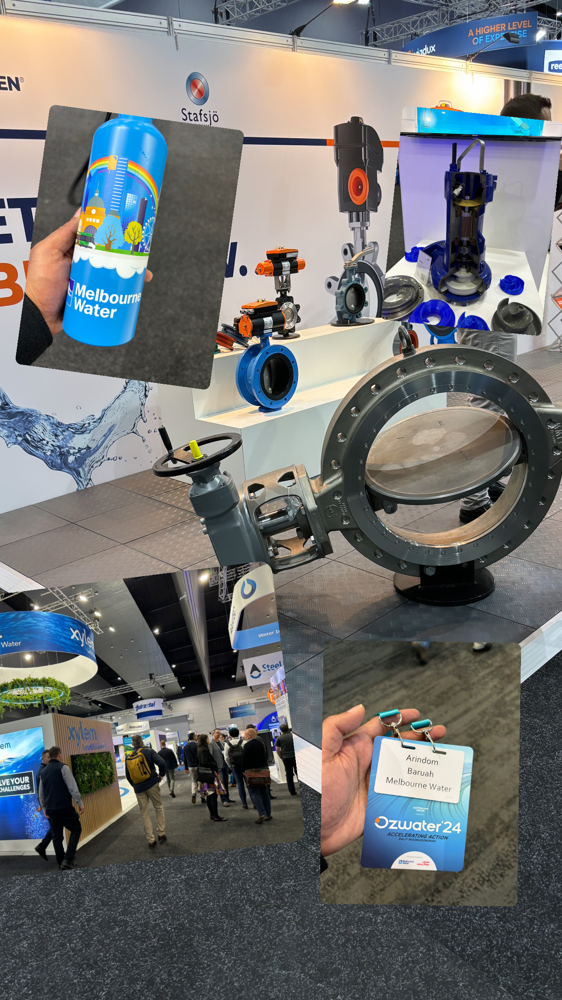
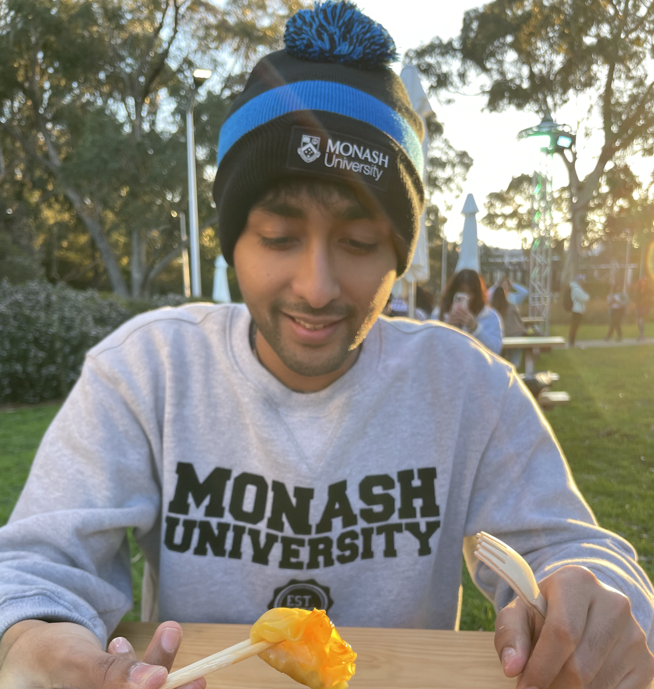

Hi ! I am Arindam Baruah, a graduate student of Business Analytics at Monash Business School, Monash University. With a keen interest and salient experiences in the field of analytics, I am intrigued by the patterns which can be uncovered through data visualisations and some very interesting mathematics. I focus on implementing data science concepts to real-world problems and have successfully implemented them for predicting various estimates in the field of manufacturing, hospitality, banking and wild-life conservation.
Statistics, Data analytics, Consulting, Machine learning, Data Visualisation, Project Management, Research, Steel manufacturing.
My studies generally span over various fields and I am constantly in the hunt to uncover more scenarios which would let me harness the power of analytics to automate various tasks and allow me to gain meaningful insights post analysis.
My journey so far…
Business Analyst intern (2024-Present)
Major Capital Delivery, Service Assets and Lifecycle department
Project Management,Forecasting,Data Analysis, MS Office,MS Teams, Data Visualisation,Team Work, MS PowerBI, Communication Skills, Root Cause Analysis.

As part of a work integrated learning program during my Business Analytics full-time course at Monash University, I was hired by Melbourne Water Corporation as a Capital Delivery Model Intern. Melbourne Water Corporation is a Victorian Government owned organisation which is responsible for maintaining critical reserves of rain water, provide clean drinking water to various parts of Melbourne and its surrounding areas, provide infrastructure for waste and effluent treatment, and work on sustainability which aims at reducing water pollution and wastage in the region.
Some of my key responsibilities during my time at the organisation are delineated below:
- Deployed as a Business Analyst intern in the Service Assets and Lifecycle division of the organization, primarily tasked with assisting in providing a data-based decision-making approach to formulate the upcoming Capital Delivery Model.
- Successfully implemented a risk analysis component based on safety key performance indicators in the current Capital Delivery Model which allowed for streamlining the selection of service providers to carry out the project activities in the intended project time frame.
- Provided detailed insights from project data by implementing text analysis scripts on MS Excel as well as R, and subsequently reported the data to the Major Capital Delivery team to obtain the current capital expenditure on outsourced project activities.
- Maintained a stakeholder communication management plan and effectively organized the project schedule to complete the delegated tasks in specified number of sprints.
- Created a dashboard on PowerBI for obtaining the split of project sizes based on historical capital invested and effectively forecasted the allocation of future projects as per the latest pricing submissions which are to be approved by the government.
Technical Data Analyst (2021-23)
Compact Strip Production rolling mill department
Data Analysis, MS Office, Data Visualisation, Python, Customer Relations, Team Work, MS PowerBI, Communication Skills, Root Cause Analysis, Conflict Management.

After studying a specialisation in the field of metallurgy and manufacturing engineering at IIT Indore, I joined a leading steel manufacturer in the world, ArcelorMittal in their joint venture with Nippon Steel, AM/NS India.
As part of my deployment, I was posted as a technical data analyst in the compact strip production (CSP) division of the integrated steel plant in the region of Hazira, Gujarat, India. Here are some key highlights of my wonderful time back in the steel industry:
- Performed data-driven time and motion-based study to reduce downtime of the production unit resulting in potential annual cost savings of 1.8 million dollar.
- Cooperated with multiple departments and team leaders to provide sample data analysis and draw conclusions through intuitive visualisations.
- Created a process monitoring dashboard on PowerBI for quick anomaly detection, which allowed for regular corrective and preventive actions to be taken on short notice and further reduced data cleaning operation duration from 1 hour to 20 minutes.
- Compiled, maintained and visualised data containing critical sustainability indicators for studying the effect of the manufacturing plant on the environment.
- Worked closely with R&D, Quality control and Automation department for resolving process and product defects through data driven studies.
- Performed root cause analysis and suggested corrective actions for major product defects.
- Conducted technical and software-based trainings for shop floor operators.
- Implemented various statistical quality control techniques, such as control charts, to study and monitor the current process deviations before and after any significant process alteration through sample analysis.
- Involved in investigation of customer or downstream complaints and suggesting corrective actions to prevent recurrence of similar complaints.
Graduate student at Monash Business School (2023-24)
Master’s of Business Analytics (MBAT) cohort
Data Analysis,Statistical thinking, High-dimesional data analysis, MS Office, Data Visualisation, R-programming, Project Management, Team Work, MS Teams, Communication Skills, Exploratory Data Analysis, Forecasting.

With close to 2 years of hands-on experience after working as a technical data analyst, I made the decision to explore the field of analytics further and enrolled myself in the master of business analytics course at Monash University, Australia. My experiences of studying an analytics course at a business school are delineated below :
Nominated among the leading students for the Global Victoria Intellect Program (GVIP), requiring us to organise in a team of student consultants from various universities of Victoria, and tasked with performing secondary research as well as a SWOT analysis for the client (Delta-V Experts) to make a decision on entering the Malaysian market.
Took up the role of a Business Analyst and provided data-driven research for gaining key market performing indicators of Malaysia for the client Delta-V Experts based in Melbourne, Australia.
Enlisted as a Data Entry volunteer for the Monash Student Association (MSA) and tasked with accurately entering raw data logs into the primary database for rewards and volunteering hours calculation.
An active participant in various data analytics based competitions which have resulted in a winning submission at the MDSS Annual datathon on the waste disposal problem of Australia.
Actively volunteered for the Monash Graduate Association (MGA) and helped organise multiple university events such as O-week, HDR Trivia night, Frersh food hanadouts and many more.
Active participant in the Alumni mentoring program, thereby building industrial relations as well as .
Teaching Assistant (2019-21)
Metallurgy and Materials Science
Data Analysis, MS Office, Data Visualisation, Python, Research, Metallurgy, Computer Aided Drawing, Communication Skills, Root Cause Analysis, Finite Element Analysis.

As a teaching assistant at the Indian Institute of Technology Indore, I was a part of the Advanced Mechanical Metallurgy laboratory, mostly working with various computational methods such as machine learning classification models and finite element models to detect defects in solid state welding processes such as Friction Stir Welding.
Some of my key highlights while in academia are as follows:
- Conducted detailed experimentation and performed data analysis of the results from various metallurgical studies such as X-ray diffraction, electron microscopy and universal testing machines.
- Utilised machine learning models such as XGBoost, and LightGBM to train datasets which would allow for accurate detection of process parameters resulting in joint defects such as voids in welded mechanical joints.
- Nominated as a delegate to showcase my research at the Annual Technical Meet hosted by The Indian Institute of Metals and was awarded with the best poster presentation for my research on creating a finite element model of aluminium and magnesium welded friction stir welded joints.
- Served as a key member of the placement committee which was tasked with maintaing industrial relations with various organisations to conduct recruitment programs for the current cohort of students.
- Served as a class representative who was responsible for representing the class of 2021 in various redressal meetings with the faculties of the institute.
- Successfully published a total of 3 research papers during my tenure at the institute which can be referred to here.
Recent publications
- Optimised machine learning classification model to detect void formations in friction stir welding. Link
- Numerically modelled study of the plunge stage in friction stir spot welding using multi-tiered mesh partitions. Link
- Numerical Simulation of Friction Stir Spot Welding of Aluminium-6061 and Magnesium AZ-31B. Link